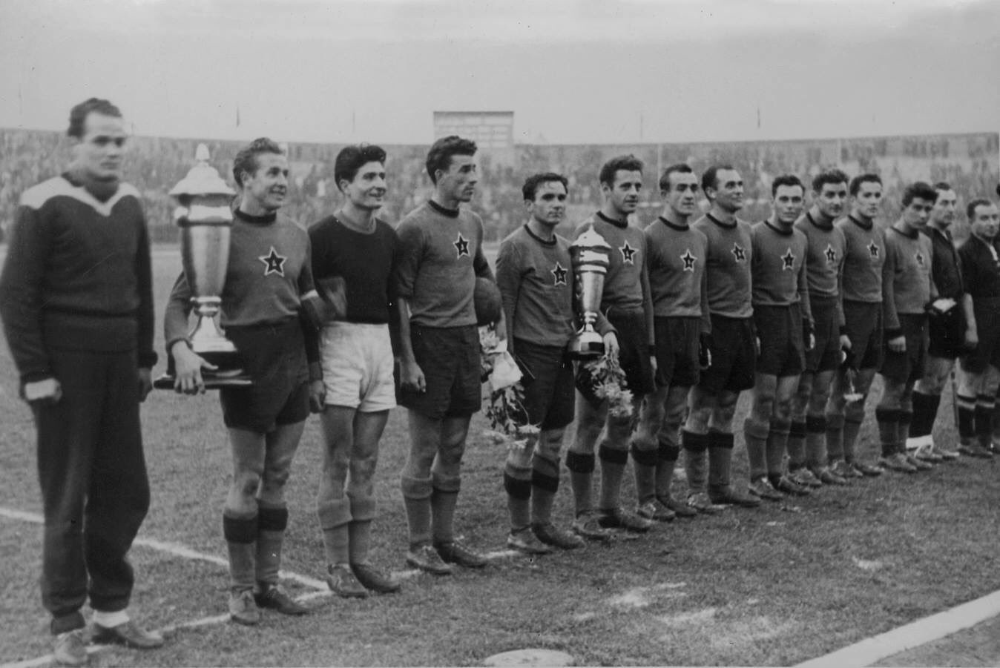
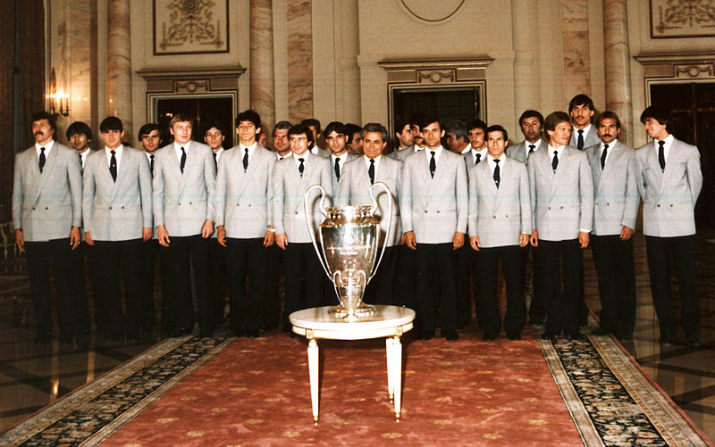
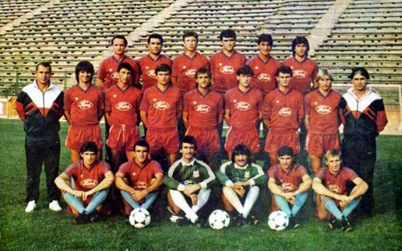
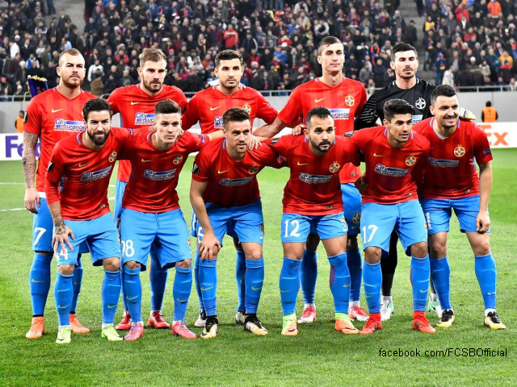

Steaua București a luat ființă pe 7 iunie 1947, la inițiativa mai multor ofițeri ai Casei Regale Române, printr-un decret semnat de generalul Mihail Lascăr, fostul Comandant Suprem al Armatei Regale Române, a primit inițial denumirea de „Asociația Sportivă a Armatei” (ASA). Primul meci a avut loc la data de 24 august 1947, împotriva echipei clujene Dermata și s-a încheiat la egalitate 0 - 0.
Puternic susținută din spate de regimul comunist, ASA a fost împinsă direct spre prima divizie, prin excluderea unei echipe de tradiție, Carmen București.
Clubul a fost format ca o societate sportivă cu șapte secții, inclusiv de fotbal, antrenat de Coloman Braun-Bogdan. A fost redenumit „CSCA” (Clubul Sportiv Central al Armatei) în 1948, și CCA (Casa Centrală a Armatei) în 1950. În 1949, CSCA a câștigat primul ei trofeu, Cupa României, învingând cu 2-1 în finală pe CSU Cluj.
Anii 1950 au reprezentat prima epocă de glorie a clubului, în care s-a cristalizat faimoasa „echipă de aur”, care uneori era aceeași cu Echipa națională de fotbal a României. Steaua de astăzi a câștigat primul său titlu de campioană în 1951, sub bagheta fostului locotenent din vremurile nașterii echipei, Gheorghe Popescu I. Din acel an și până în ediția 1960-61, CCA a mai cucerit încă 5 titluri de campioană. Cu numele de „CCA”, echipa a intrat în „lumea bună” a fotbalului românesc, câștigând Campionatul României de trei ori la rând, în 1951, 1952 și 1953, precum și prima „dublă” Cupă-Campionat din Istoria clubului, în 1951. 1956 a fost unul dintre cei mai buni ai clubului, deoarece, pe lângă câștigarea campionatului, echipa, pe atunci antrenată de Ilie Savu, a întreprins un turneu în Anglia, unde a reușit rezultate notabile în fața unor echipe de prestigiu precum Luton Town FC, Arsenal FC, Sheffield Wednesday FC sau Wolverhampton Wanderers FC.

La sfârșitul anului 1961 CCA și-a schimbat numele în „CSA Steaua București”. Motivul a fost prezența pe stema clubului a unei stele roșii (ceva obișnuit pentru cluburile militare din statele comuniste din Estul Europei), care a fost schimbată într-o stea galbenă, simbolizând tricolorul românesc. În anii '60 și '70, Steaua avea să cucerească două titluri pe deceniu, 1962 și 1968, respectiv 1976 și 1978, câștigându-și însă renumele de „specialistă a Cupei”. De asemenea în această perioadă, pe 9 aprilie 1974, actualul stadion al Stelei, Stadionul Ghencea, a fost inaugurat într-un meci amical cu OFK Belgrad. Până la acea dată, Steaua își jucase meciurile de acasă pe Stadionul Republicii și pe „23 august”.
Sub conducerea antrenorilor Emeric Jenei și Anghel Iordănescu (antrenor secund), Steaua a impresionat în campionatul 1984-1985, câștigându-l după o pauză de șase ani. A urmat cel mai spectaculos sezon de cupe europene din fotbalul românesc. După ce a eliminat pe Vejle BK, Budapest Honvéd FC, Kuusysi FC și pe RSC Anderlecht, Steaua a devenit prima echipă din România care a jucat o finală europeană. Pe 7 mai 1986, pe stadionul Ramón Sánchez Pizjuán din Sevilla, campioana Spaniei, FC Barcelona, era cotată cu prima șansă, dar după prelungiri în care scorul a rămas 0-0, legendarul portar Helmuth Duckadam a apărat patru penalty-uri la rând, contribuind decisiv la victoria Stelei cu 2-0. Steaua a devenit astfel prima echipă din Estul Europei, și singura dintr-o țară comunistă, care a câștigat trofeul continental suprem. Steaua și-a trecut în palmares și o Supercupă a Europei, câștigând în 1987 finala cu Dinamo Kiev, printr-un gol marcat de Gheorghe Hagi.

Contrazicându-i pe cei care considerau câștigarea Cupei Campionilor Europeni de către Steaua un fenomen izolat, Steaua a rămas la cel mai înalt nivel în fotbalul european de la sfârșitul anilor '80, ajungând în semifinala CCE în sezonul 1987-88, și în finala aceleiași competiții în 1989, pierzând însă cu 4-0 în fața lui AC Milan. Pe lângă aceasta, Steaua a mai câștigat patru titluri naționale (1985–86, 1986–87, 1987–88, 1988–89) și patru cupe ale României (1984–85, 1986–87, 1987–88, 1988–89). De asemenea, din iunie 1986 până în septembrie 1989, Steaua a stabilit un record de 104 meciuri fără înfrângere în campionatul intern, doborât la nivel mondial, dar încă valabil pe plan european.
Revoluția română din 1989 a însemnat trecerea de la o economie complet controlată de către stat la una liberă de piață, și, prin urmare, mulți dintre jucătorii din echipa anilor '80 s-au transferat la cluburi bogate din Occident. Bazându-se pe noua generație de jucători, Steaua a revenit în prim-planul fotbalului românesc, câștigând campionatul de șase ori la rând, între sezoanele 1992-1993 și 1997-1998, egalând astfel performanța echipei Chinezul Timișoara, din anii '1920. A câștigat de asemenea trei Cupe ale României, în sezoanele 1995-96, 1996-97 și 1998-99. Pe plan internațional, Steaua s-a calificat de trei ori la rând în Liga Campionilor (noul format al Cupei Campionilor Europeni), între 1994-95 și 1996-97, fiind prima echipă din România care a participat în această competiție.
În 1998, secția de fotbal s-a separat de CSA Steaua și a primit în concesiune pe 20 de ani denumirea de „Steaua”, luând numele de FC Steaua București, clubul fiind condus de către omul de afaceri Viorel Păunescu. În acea perioadă, clubul a intrat rapid în datorii. Lui George Becali, alt afacerist, i-a fost oferită funcția de vice-președinte, cu speranța că va investi îndeajuns de mulți bani în club. Becali a investit, majorările de capital făcând ca el să dețină majoritatea acțiunilor în 2002, transformând compania guvernantă în una publică în 2003. Deși contestat de către o parte a suporterilor, Becali a introdus diverse planuri manageriale pentru club, ajutat pentru un timp și de fostul președinte executiv Mihai Stoica.

Sub conducerea fostei glorii italiene Walter Zenga, Steaua s-a calificat în grupele Cupei UEFA în sezonul 2004-05, Zenga calificând o echipă românească în „primăvara europeană” pentru prima oară după 1993 (când tot Steaua a ajuns în sferturile de finală ale Cupei Cupelor). Steaua a și câștigat titlul în 2005, performanță repetată în sezonul următor, sub conducerea succesivă a antrenorilor Oleg Protasov (iulie-decembrie) și Cosmin Olăroiu (ianuarie-mai). În sezonul 2005-2006 Steaua a reușit să ajungă în semifinalele Cupei UEFA, fiind eliminată la limită de Middlesbrough FC, după ce trecuse de Rapid București într-un sfert de finală „all-Romanian”. Steaua a câștigat Supercupa României în iulie 2006, trofeul cu numărul 52 din Istoria clubului. De asemenea, în sezonul 2006–2007, Steaua s-a calificat în grupele Ligii Campionilor pentru prima dată după 10 ani, performanță repetată și în cele două sezoane următoare.
În perioada 2006-2011 s-au investit în transferuri 45,1 milioane de €.
În 2013, Steaua a câștigat primul titlu după șapte ani, ce de-al 24-lea titlu din istorie și s-a calificat în faza grupelor Ligii Campionilor 2013-2014. A reușit să câștige campionatul și în următorii doi ani.

Spre sfârșitul perioadei în care clubul avea dreptul să poarte denumirea de „Steaua” și însemnele pe care anterior le deținuse Clubul Sportiv al Armatei Steaua, au apărut conflicte. FC Steaua Bucuresti, devenit acum privat, și Clubul Sportiv al Armatei Steaua, club departamental. În 2011, clubul de fotbal patronat de Gigi Becali a fost acționat în instanță de către CSA Steaua, cerându-se anularea logotipului înregistrat de Becali. După mai multe decizii contradictorii, cea finală, a Înaltei Curți de Casație și Justiție (ICCJ) a dat dreptate clubului armatei, anulând marca, și, ca urmare, echipa patronată de Gigi Becali a pierdut în favoarea clubului armatei drepturile asupra emblemei. CSA Steaua a păstrat vechea stemă și a reînființat o nouă echipă de fotbal administrată de secția ei corespunzătoare, care a pornit la drum din liga a IV-a București. Pentru a stinge conflictele anterioare cu CSA Steaua, finanțatorul FC Steaua București, George Becali, a cerut crearea unui nou logotip, al optulea din istorie (vedeți mai jos în secțiunea „Stemă”), precum și schimbarea numelui clubului în FCSB, denumire înregistrată oficial începând cu luna aprilie 2017.